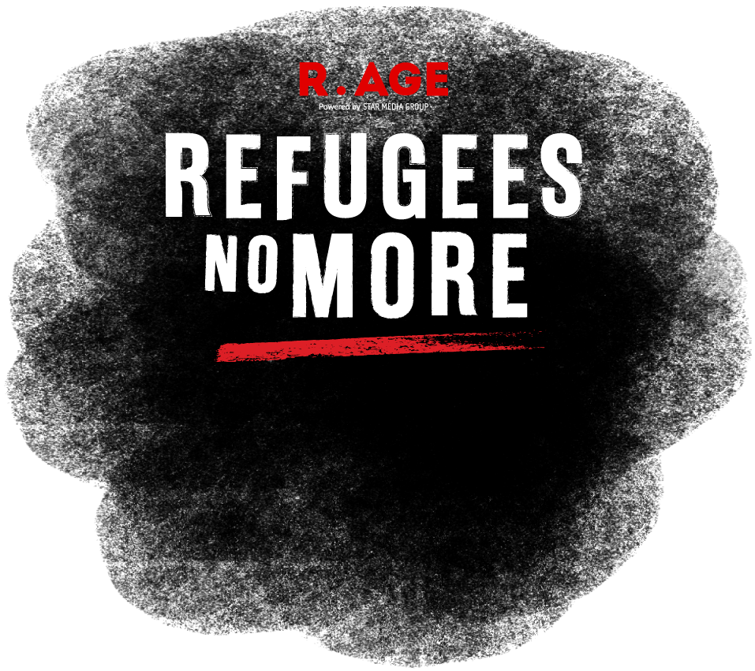

In 2017, UNHCR announced an end to refugee protections for the ethnic Chin community. R.AGE documented how this decision affected the over 30,000 Chins living in Malaysia, and found stories of heartbreak, fear, and even death.

On March 14, 2019, following months of campaigning by the Chin community, activists and the public, UNHCR announced that refugee protections for the Chin community will be maintained.
Thank you for doing your part by sending your petition via The Chin Up Project. But there is still more to be done. Join the campaign to make Malaysia kinder towards refugees.
On March 14, 2019, following months of campaigning by the Chin community, activists and the public, UNHCR announced that refugee protections for the Chin community will be maintained.
Thank you for doing your part by sending your petition via The Chin Up Project. But there is still more to be done. Join the campaign to make Malaysia kinder towards refugees.
The British invaded and annexed the Chin territory into Burma, which was also a British colony. Missionaries arrived and introduced the Chins to Christianity.
Burma received independence from the British, and the Chin people adopted a democratic government. Today, they celebrate February 20 as Chin State Day in recognition of the transition from traditional to democratic rule.
A military coup led by General Ne Win marked the beginning of totalitarian rule and the political dominance of the army. This led to years of armed conflict and violence, and coupled with ethnic and religious persecution by Buddhist nationalists movements, prompted mass migrations by the Chins and other minority ethnic groups.
Chin territory was granted state status, and became Chin state. Today, it remains one of the poorest and most underdeveloped territories in Myanmar.
The 8888 Uprising saw hundreds of thousands of people protesting against the government in a series of nationwide protests, marches and civil unrest. The uprising ended on Sept 18, 1988 after a military coup, but not before thousands of deaths had occurred.
After this nationwide uprising, there was an increased militarisation of Chin state, where the people were forced to take part in dangerous and difficult jobs including road paving and portering. Ethnic minorities including the Chins fled Myanmar en masse, with many Chins ending up in Malaysia.
Population of Chin migrants in Malaysia is estimated at 12,000. Out of that, only 600 were recognised as refugees.
Chin refugees in Malaysia totalled 52,152 by end of the year, making them the biggest refugee community in the country. The UNHCR Global Focus report 2014 stated that the Chins “were in most cases no longer in need of protection under UNHCR’s mandate”.
The Chin National Army signed a landmark National Ceasefire Agreement with the government of Myanmar and representatives of various ethnic insurgent groups, agreeing to end all hostilities.
The earliest record of a Chin’s UNHCR card being withdrawn, as documented by R.AGE. This person in particular was informed by a UNHCR official that it was safe to return to Myanmar, and told to go home. In the following months, many more Chin asylum seekers would have their UNHCR cards withdrawn.
R.AGE held its first mass documentation process, and recorded over 50 cases where members from the Chin community had their UNHCR cards withdrawn, and told that it was safe to return home.
A UN special rapporteur report cited armed conflict in the Chin state in the Paletwa township bordering Rakhine, and raised concerns about the continued persecution against ethnic and religious minorities.
UNHCR issued a community messaging announcing a cessation policy for ethnic Chins, as their assessments show that “Chin state is now safe and secure from a refugee protection perspective.”
Chin refugees who renewed their UNHCR cards after Aug 1 will be given two options: either to extend their existing cards until Dec 31, 2019 or go through an interview to determine if they are still in need of international refugee protection.
Hundreds of Chin refugees held a peaceful demonstration at the UNHCR office in Kuala Lumpur hoping to bring attention to the matter at the Global Summit of Refugees in Geneva.
UNHCR responded to the protest with a statement claiming that “an analysis of political, social and security developments in the Chin State over the course of several years has determined that there are positive developments in the state which are durable and sustainable.”
UNHCR begins “cessation counselling”, where all Chins who try to renew their cards are presented with two options, according to the cessation announcement on June 13.
Human rights NGO Tenaganita said the ending of refugee protection for the Chins could lead to cases of smuggling and human trafficking.

R.AGE released the first episode of Refugees No More and a multimedia feature story, on the reported increase in depression, anxiety and suicidal ideation in the Chin community since the ending of their refugee protection was announced.
UNHCR issued a statement in response to R.AGE’s story, which said that they are reviewing both groups of Chin refugees and asylum seekers to assess if they require further UN protection.
Ms Yanghee Lee, Special Rapporteur on the situation of human rights in Myanmar spoke at the 73rd session of the General Assembly, saying she was “not convinced that the areas (Myanmar refugees) would return to are safe”. She noted that clashes continue to erupt in Chin state between the Arakan Army and the Tatmadaw, and that “the Chin continue to face longstanding discrimination based on their Christianity.”
UNHCR regional (Bangkok) said to R.AGE that “85% of 1,994 individual Chin refugees counselled as of the end of Sept 2018 have agreed with UNHCR’s assessment that they are no longer in need of international protection.” The response also noted that "any Chin refugee determined to continue to have international protection would of course, maintain that status." Read their full response here.
Foreign Minister Datuk Saifuddin Abdullah said the Malaysian government is standing by the decision that was made by UNHCR but will not force Myanmar refugees to return if conditions are unsafe.
UNHCR regional (Bangkok) responded to follow-up questions from R.AGE, stating that Chin refugees in Myanmar will only be interviewed and counselled in December 2018, as there are fewer refugees compared to Malaysia. Read their full response here.

R.AGE organised a special documentary screening of Refugees No More, followed by a town hall discussion with representatives from UNHCR, Malaysian Immigration, Refuge for Refugees and the Chin community.
UNHCR Representative for Malaysia Richard Towle urged the government to give refugees the right to work in the country, as it would “make a huge difference” in their lives.
A R.AGE documentary exposed hundreds of ethnic Chin refugees and asylum seekers who are found to be working illegally and living in dangerous conditions in Cameron Highlands, with some families resorting to spending nights in the jungle to avoid immigration raids. Read it here.
UNHCR issued a public statement stating their concerns “about the humanitarian impact of continuing violence in southern Chin State and Rakhine State in Myanmar”, and shares that they are ready to offer support.
Al-Jazeera reported that ethnic Chin children born in Malaysia will face difficulty in returning to Myanmar, as it won’t be easy for them to get citizenship due to lack of documentation.
Malaysiakini reports Foreign Affairs Minister Datuk Saifuddin Abdullah as saying Malaysia’s current position regarding Chin refugees is to go along with UNHCR, but that the government is also open to suggestions. Saifuddin added that they would do as much as they can to ensure the safety of refugees returning to their countries of origin.
Over 1,500 Myanmar Chins gather to celebrate the 71st Chin National Day, which also saw Malaysian MPs Maria Chin Abdullah and Charles Santiago attending in solidarity with the community.
An independent coalition of refugee advocate organisations launches The Chin Up Project, calling upon UNHCR, Myanmar, and the Malaysian government to review the Chin policy and refugee policies in general. The Chin Up Project sees the ethnic Chin community in Malaysia answer one question: Where do you see yourself in 2020? Read about it here.
Myanmar Times reports that more than 500 Myanmar refugees (of Karen and Karenni ethnicities) in Thailand return to Myanmar, as part of a voluntary repatriation led by Thai and Myanmar governments with UNHCR’s support.
A UNHCR spokesperson said they are facilitating the repatriation by “ascertaining the willingness of all potential returnees, ensuring that there are no significant safety risks in return, securing Myanmar government approval, and ensuring that UNHCR and partners can support and monitor the returnees’ resettlement.”
The National Security Council says the Malaysian government has not been “officially notified” by UNHCR on the Chin policy.
Alliance of Chin Refugees chairman Mung Khat called UNHCR's lack of communication with the Malaysian government "dangerous" and "unfair". Read the full statement here.
"We don't know if UNHCR shares information about the refugee community here to the Malaysian government, so if the government is making or supporting decisions without having the full information, it's not fair. UNHCR should work closely and consult with the Malaysian government so that they can get on the proper pathway to find a solution together," he said.
UNHCR’s decision to end refugee protections for ethnic Chin refugees goes against its own guidelines, says regional refugee expert Themba Lewis.
Lawyer and human rights activist Latheefa Koya warned that Malaysia would be “breaking the international law (of non-refoulement)” if they force the Chins to return without ensuring their safety. Read the report here.
In a surprise statement that took the community by surprise, UNHCR announced a reversal of the cessation policy, due to “new reports and assessments” that showed ongoing security concerns in Chin state.
"We recognise that Chin refugees may still require international protection due to the worsening security situation in southern Chin State in Myanmar, which has resulted in new displacement," said Volker Türk, Assistant High Commissioner (Protection) for UNHCR. Read the full report here.
UNHCR issued a statement clarifying that standard UNHCR documentation will be reissued to refugees who have had theirs withdrawn since the policy was announced.
In light of the recent reversal of the cessation policy, refugee groups called for more support to be provided to the ethnic Chin community, including reissuing standard UNHCR documentation and organising open dialogue with the community.
Migrants’ rights group Tenaganita and several Chin leaders held a press conference calling for UNHCR to extend their protection to asylum seekers too. Read the full report here.
According to UNHCR’s cessation policy, which has since been halted, this is the final deadline for ethnic Chins to receive refugee protection.
All refugee communities deserve better solutions — solutions that take into account their aspirations and empowers them to contribute back to society.
If you agree that Malaysia needs to review its current refugee policies, here’s how you can take action.
Terms & Conditions | Privacy Statement © 2019 R.AGE. A PRODUCT OF STAR MEDIA GROUP BERHAD (ROC 10894D)